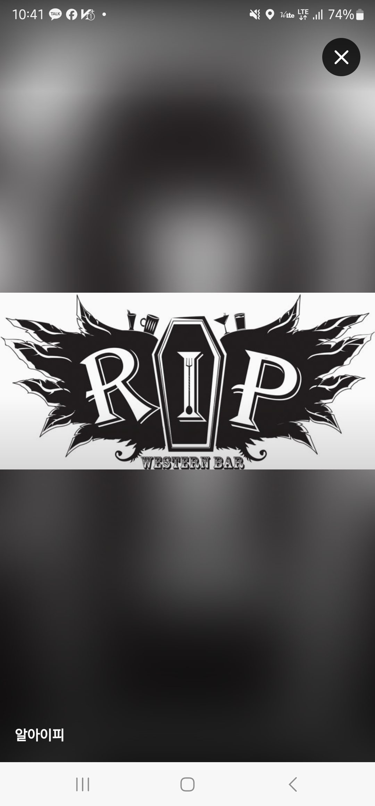

COCKTAIL MENU
R.I.P의 칵테일 메뉴 설명과 구성을 한 눈에 볼 수 있는 디지털 메뉴판입니다.
상황에 따라 가니쉬 및 잔은 달라질 수 있지만, 맛과 용량은 동일합니다.
취향에 맞는 칵테일 추천을 원하시거나 궁금한 점이 있다면 편히 말씀해주세요.
주문과 문의는 바텐더에게 부탁드립니다.
대부분의 칵테일은 아래 네 가지 축이 조합되어 만들어집니다. 메뉴의 재료란을 이 순서대로 읽어보시면 한 잔의 맛과 도수를 머릿속에 그려볼 수 있어요.
술의 중심이 되는 증류주. 진 · 럼 · 보드카 · 데낄라 · 위스키 · 브랜디 중 무엇이냐에 따라 향과 도수의 뼈대가 정해집니다.
리큐르 · 베르무트처럼 향과 단맛, 쓴맛을 더해 베이스의 캐릭터를 다듬어주는 보조 술입니다.
과일 주스 · 시럽 · 우유 · 크림 · 허브가 맛의 색을 결정합니다. 상큼함은 라임/레몬, 달콤함은 시럽이 담당해요.
토닉 · 사이다 · 콜라 · 진저에일 같은 탄산이나 비터즈로 마무리해서 가벼움, 청량감, 쌉쌀함을 잡아줍니다.
예) 진토닉 = Gin(베이스) + Tonic(피니셔). 단순한 두 줄이지만 향긋한 보타니컬과 쌉쌀한 키니네의 조합이 클래식의 정수입니다.
메뉴에 등장하는 재료들의 정체와 특징을 정리했어요. 칵테일 이름이 낯설어도 재료만 보면 맛이 가늠됩니다.